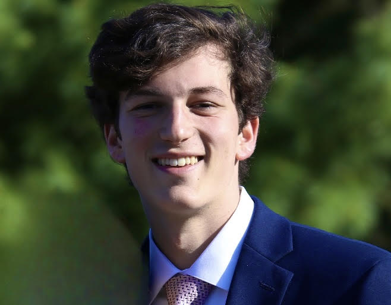

FREELANCER, DEVELOPER, INNOVATOR
Hey, I'm Brandon Michaels. I'm a Front-End
Developer, Passionate Learner, and Engaged
First-Year Computer Science Student At Georgia Tech
Over the past few years, I have had the pleasure to express my passion for website development and technology to assist struggling restaurant and business owners recover from the Covid-19 pandemic through my own organization Sitesy. As the Founder and CEO, I was able to see the development process from start to finish. Meeting business owners in person was a rewarding and inspirational experience. To date I have helped 15+ businesses, raised $2000 in funding, and increased website traffic on new media sites by 100,000s of users